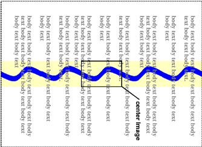

内容
CSS属性允许编写者指定元素的前景色和背景色。背景可以是颜色或者图片。background属性允许编写者定位一张背景图片，平铺（repeat）它，以及声明它应该相对视口固定还是随文档滚动
合法颜色值的语法见颜色单位小节
该属性描述了元素文本内容的前景色。指定红色有几种不同的方式：
em { color: red } /* predefined color name */
em { color: rgb(255,0,0) } /* RGB range 0-255 */
编写者可以把一个元素的背景（即，它的绘制表面（rendering surface）指定为一个颜色或者一张图片。根据盒模型，"background"是指content，padding和border区域的背景。边框颜色和样式通过border属性来设置，而margin总是透明的
background属性是不可继承的，但默认情况下父级盒的背景将透过来，因为'background-color'的初始值为'transparent'
根元素的背景会成为画布的背景并覆盖整个画布，被定位（用'background-position'）在同一个位置，就像它只是为根元素本身绘制的一样。根元素不会再次绘制这个背景
然而，对于HTML文档，我们推荐编写者给BODY元素指定背景，而不是给HTML元素。对于那些根元素是'background-color'计算值为'transparent'且'background-image'计算值为'none'的HTML的"HTML"元素或者XHTML的"html"元素的文档，用户代理在给画布绘制背景时，必须应用该元素的第一个HTML的"BODY"元素或者XHTML的"body"元素子级的background属性的计算值，并且不给那些子元素绘制背景（作为画布的背景覆盖整张画布）。这种背景也必须被定位到同一个位置，就像它们只是为根元素绘制的一样
根据这些规则，如下HTML文档下层的画布将具有一个"marble"背景：
<!DOCTYPE HTML PUBLIC "-//W3C//DTD HTML 4.01//EN">
<TITLE>Setting the canvas background</TITLE>
<STYLE type="text/css">
BODY { background: url("http://example.com/marble.png") }
</STYLE>
<P>My background is marble.
注意，即使在HTML源码中省略了BODY标签，BODY元素上的规则仍将生效，因为HTML解析器会推断缺少的标签
形成了一个堆叠上下文（见'z-index'属性）的元素的背景会被绘制在该元素的堆叠上下文的底部，在堆叠上下文中的所有东西的下面
| Value: | <color> | transparent | inherit |
| Initial: | transparent |
| Applies to: | 所有元素 |
| Inherited: | no |
| Percentages: | N/A |
| Media: | visual |
| Computed value: | 与指定值相同 |
该属性设置了一个元素的背景色，要么是一个<color>值，要么是关键字'transparent'让底层颜色透出来
h1 { background-color: #F00 }
| Value: | <uri> | none | inherit |
| Initial: | none |
| Applies to: | 所有元素 |
| Inherited: | no |
| Percentages: | N/A |
| Media: | visual |
| Computed value: | 绝对URI或者none |
该属性设置了一个元素的背景图片。在设置一幅背景图片时，编写者还应该指定一个将在图片不可用时应用的背景色。当图片可用时，它会被渲染在背景色上面（因此，在图片的透明部分背景色是可见的）
该属性的值是用来指定图片的<uri>，或者'none'，表示不使用图片
body { background-image: url("marble.png") }
p { background-image: none }
百分比形式的内在尺寸必须根据为'background-position'属性建立坐标系的矩形的尺寸来解析
如果具有一个内在宽度或者内在高度和内在宽高比，那么缺少的尺寸就根据给定的尺寸和比例来计算
如果图片具有一个内在宽度或者内在高度但没有内在宽高比，那么缺少的尺寸被假设为给'background-position'属性建立坐标系的矩形的尺寸
如果图片没有内在尺寸但具有一个内在比例，就把尺寸假定为不超出给'background-position'属性建立坐标系的矩形中满足该比例的最大尺寸
如果图片没有内在比例，那么就把尺寸假定为给'background-position'属性建立坐标系的矩形
| Value: | repeat | repeat-x | repeat-y | no-repeat | inherit |
| Initial: | repeat |
| Applies to: | 所有元素 |
| Inherited: | no |
| Percentages: | N/A |
| Media: | visual |
| Computed value: | 与指定值相同 |
如果指定了一张背景图片，该属性指定了此图片是否需要平铺，以及怎样平铺。整个平铺会覆盖盒的content，padding和border区域
内联元素上background-image的平铺和定位在本规范中是未定义的。将来的CSS版本可能会定义内联元素上background-image的平铺和定位
属性值含义如下：
body {
background: white url("pendant.png");
background-repeat: repeat-y;
background-position: center;
}
 [D]
背景图片的一份拷贝居中了，而其它拷贝被放在它的上方和下方，在元素后面形成了一条竖直带
| Value: | scroll | fixed | inherit |
| Initial: | scroll |
| Applies to: | 所有元素 |
| Inherited: | no |
| Percentages: | N/A |
| Media: | visual |
| Computed value: | 与指定值相同 |
如果指定了一张背景图片，该属性指定了它应该相对视口固定（'fixed'）还是随包含块滚动（'scroll'）
注意，每个视图只有一个视口。如果一个元素具有滚动机制（见'overflow'），'fixed'背景不会随该元素移动，而'scroll'背景也不会随滚动机制移动
即使图片是固定的，它仍然只在处于该元素的content，padding或者border区域时才可见。因此，图片可能不可见，除非它是平铺的（'background-repeat: repeat'）
在分页媒体中不存在视口的地方，'fixed'背景相对页盒固定，并且因此在每一页上重复
本例创建了一个在元素滚动时，“粘”在视口上的无限竖直带
body {
background: red url("pendant.png");
background-repeat: repeat-y;
background-attachment: fixed;
}
不支持'fixed'背景的用户代理（例如，由于硬件平台的限制）应该忽略带有'fixed'关键字的声明，例如：
body {
background: white url(paper.png) scroll; /* for all UAs */
background: white url(ledger.png) fixed; /* for UAs that do fixed backgrounds */
}
详情见一致性章节
| Value: | [ [ <percentage> | <length> | left | center | right ] [ <percentage> | <length> | top | center | bottom ]? ] | [ [ left | center | right ] || [ top | center | bottom ] ] | inherit |
| Initial: | 0% 0% |
| Applies to: | 所有元素 |
| Inherited: | no |
| Percentages: | 参照该盒本身的尺寸 |
| Media: | visual |
| Computed value: | 对于<length>是绝对的值，否则就是百分比 |
如果指定了一张背景图片，该属性指定了它的初始位置。如果只指定了一个值，第二个值就假定为'center'。如果至少有一个值不是关键字，那么第一个值表示水平位置，第二个值表示竖直位置。允许负的<percentage>和<length>值
然而，如果图片具有一个内在比例但没有内在尺寸，其位置在CSS 2.1中是未定义的
body { background: url("banner.jpeg") right top } /* 100% 0% */
body { background: url("banner.jpeg") top center } /* 50% 0% */
body { background: url("banner.jpeg") center } /* 50% 50% */
body { background: url("banner.jpeg") bottom } /* 50% 100% */
内联元素上background-image的平铺和定位在本规范中是未定义的。将来的CSS版本可能会定义内联元素上background-image的平铺和定位
如果背景图片在视口中是固定的（见属性），图片就相对于视口放置，而不是该元素的padding box。例如，
body {
background-image: url("logo.png");
background-attachment: fixed;
background-position: 100% 100%;
background-repeat: no-repeat;
}
上例中，（单一的）图片位于视口的右下角
| Value: | [<'background-color'> || <'background-image'> || <'background-repeat'> || || <'background-position'>] | inherit |
| Initial: | 见单独的各个属性 |
| Applies to: | 所有元素 |
| Inherited: | no |
| Percentages: | 允许'background-position'上的百分比 |
| Media: | visual |
| Computed value: | 见单独的各个属性 |
'background'属性是一个简写属性，用来在样式表中一次性设置各个background属性（即，'background-color'，'background-image'，'background-repeat'，和'background-position'）
对于一个给定的合法声明，'background'属性先把所有单独的background属性设置为它们的初始值，然后显式赋值为声明中给定的值
下例的第一条规则中，'background-color'只给定了一个只，而其它各个属性会被设置为其初始值。第二条规则中，所有单独的属性都被指定了
BODY { background: red }
P { background: url("chess.png") gray 50% repeat fixed }